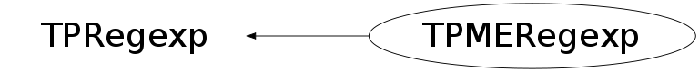

class TPMERegexp: protected TPRegexp
Wrapper for PCRE library (Perl Compatible Regular Expressions). Based on PME - PCRE Made Easy by Zachary Hansen. Supports main Perl operations using regular expressions (Match, Substitute and Split). To retrieve the results one can simply use operator[] returning a TString. See $ROOTSYS/tutorials/regexp_pme.C for examples.
Function Members (Methods)
public:
| TPMERegexp() | |
| TPMERegexp(const TPMERegexp& r) | |
| TPMERegexp(const TString& s, const TString& opts = "", Int_t nMatchMax = 10) | |
| TPMERegexp(const TString& s, UInt_t opts, Int_t nMatchMax = 10) | |
| virtual | ~TPMERegexp() |
| void | AssignGlobalState(const TPMERegexp& re) |
| static TClass* | Class() |
| Int_t | GetGlobalPosition() const |
| Int_t | GetNMaxMatches() const |
| virtual TClass* | IsA() const |
| Int_t | Match(const TString& s, UInt_t start = 0) |
| Int_t | NMatches() const |
| TString | operator[](Int_t) |
| virtual void | Print(Option_t* option = "") |
| void | Reset(const TString& s, const TString& opts = "", Int_t nMatchMax = -1) |
| void | Reset(const TString& s, UInt_t opts, Int_t nMatchMax = -1) |
| void | ResetGlobalState() |
| void | SetNMaxMatches(Int_t nm) |
| virtual void | ShowMembers(TMemberInspector& insp) |
| Int_t | Split(const TString& s, Int_t maxfields = 0) |
| virtual void | Streamer(TBuffer& b) |
| void | StreamerNVirtual(TBuffer& b) |
| Int_t | Substitute(TString& s, const TString& r, Bool_t doDollarSubst = kTRUE) |
protected:
| void | TPRegexp::Compile() |
| TString | TPRegexp::GetModifiers() const |
| TString | TPRegexp::GetPattern() const |
| Bool_t | TPRegexp::MatchB(const TString& s, const TString& mods = "", Int_t start = 0, Int_t nMaxMatch = 10) |
| Int_t | TPRegexp::MatchInternal(const TString& s, Int_t start, Int_t nMaxMatch, TArrayI* pos = 0) |
| TObjArray* | TPRegexp::MatchS(const TString& s, const TString& mods = "", Int_t start = 0, Int_t nMaxMatch = 10) |
| void | TPRegexp::Optimize() |
| UInt_t | TPRegexp::ParseMods(const TString& mods) const |
| Int_t | TPRegexp::ReplaceSubs(const TString& s, TString& final, const TString& replacePattern, Int_t* ovec, Int_t nmatch) const |
| Int_t | TPRegexp::SubstituteInternal(TString& s, const TString& replace, Int_t start, Int_t nMaxMatch0, Bool_t doDollarSubst) |
private:
| TPMERegexp& | operator=(const TPMERegexp&) |
Data Members
public:
| enum TPRegexp::[unnamed] { | kPCRE_GLOBAL | |
| kPCRE_OPTIMIZE | ||
| kPCRE_DEBUG_MSGS | ||
| kPCRE_INTMASK | ||
| }; |
protected:
| void* | fAddressOfLastString | used for checking for change of TString in global match |
| Int_t | fLastGlobalPosition | end of last match when kPCRE_GLOBAL is set |
| TString | fLastStringMatched | copy of the last TString matched |
| TArrayI | fMarkers | last set of indexes of matches |
| Int_t | fNMatches | number of matches returned from last pcre_exec call |
| Int_t | fNMaxMatches | maximum number of matches |
| UInt_t | TPRegexp::fPCREOpts | |
| TString | TPRegexp::fPattern | |
| PCREPriv_t* | TPRegexp::fPriv |
Class Charts
{kind=link}
{kind=link}
{kind=link}
{kind=link}

Function documentation
TPMERegexp(const TString& s, const TString& opts = "", Int_t nMatchMax = 10)
Constructor: s - string to compile into regular expression opts - perl-style character flags to be set on TPME object
TPMERegexp(const TString& s, UInt_t opts, Int_t nMatchMax = 10)
Constructor: s - string to copmile into regular expression opts - PCRE-style option flags to be set on TPME object
TPMERegexp(const TPMERegexp& r)
Copy constructor. Only PCRE specifics are copied, not last-match or global-matech information.
void Reset(const TString& s, const TString& opts = "", Int_t nMatchMax = -1)
Reset the patteren and options. If 'nMatchMax' other than -1 (the default) is passed, it is also set.
void Reset(const TString& s, UInt_t opts, Int_t nMatchMax = -1)
Reset the patteren and options. If 'nMatchMax' other than -1 (the default) is passed, it is also set.
void AssignGlobalState(const TPMERegexp& re)
Copy global-match state from 're; so that this regexp can continue parsing the string from where 're' left off. Alternatively, GetGlobalPosition() get be used to retrieve the last match position so that it can passed to Match(). Ideally, as it is done in PERL, the last match position would be stored in the TString itself.
void ResetGlobalState()
Int_t Match(const TString& s, UInt_t start = 0)
Runs a match on s against the regex 'this' was created with. Args: s - string to match against start - offset at which to start matching Returns: - number of matches found
Int_t Split(const TString& s, Int_t maxfields = 0)
Splits into at most maxfields. If maxfields is unspecified or
0, trailing empty matches are discarded. If maxfields is
positive, no more than maxfields fields will be returned and
trailing empty matches are preserved. If maxfields is empty,
all fields (including trailing empty ones) are returned. This
*should* be the same as the perl behaviour.
If pattern produces sub-matches, these are also stored in
the result.
A pattern matching the null string will split the value of EXPR
into separate characters at each point it matches that way.
Args:
s - string to split
maxfields - maximum number of fields to be split out. 0 means
split all fields, but discard any trailing empty bits.
Negative means split all fields and keep trailing empty bits.
Positive means keep up to N fields including any empty fields
less than N. Anything remaining is in the last field.
Returns: - number of fields found
Int_t Substitute(TString& s, const TString& r, Bool_t doDollarSubst = kTRUE)
Substitute matching part of s with r, dollar back-ref substitution is performed if doDollarSubst is true (default). Returns the number of substitutions made. After the substitution, another pass is made over the resulting string and the following special tokens are interpreted: \l - lowercase next char, \u - uppercase next char, \L - lowercase till \E, \U - uppercase till \E, and \E - end case modification.
TString operator[](Int_t )
Returns the sub-string from the internal fMarkers vector. Requires having run match or split first.
void Print(Option_t* option = "")
Print the regular expression and modifier options. If 'option' contains "all", prints also last string match and match results.
TPRegexp & operator=(const TPMERegexp& )